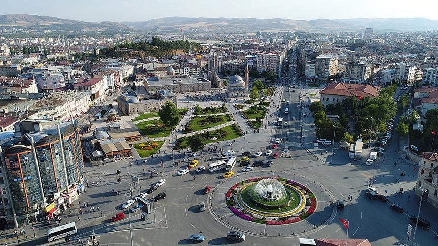

Türk Kurtuluş Savaşı'nın temellerinin atıldığı, Selçuklu devrinin dev eserleriyle süslü, yüzölçümü bakımından Konya'dan sonra ikinci sırada yer alan bir ilimiz. Sivas ili topraklarının büyük kısmı İç Anadolu'nun yukarı Kızılırmak bölümünde diğer kısımları ise Karadeniz ve Doğu Anadolu bölgesinde olup, 35° 50’ ve 38° 14’ doğu boylamları ile 38° 32’ ve 40° 16’ kuzey enlemleri arasında yer alır. İç Anadolu Bölgesi, Doğu Karadeniz Bölgesi ve Doğu Anadolu Bölgesi'nde ilçeleri ve kültür zenginliği, iklim farklılığı bulunan ve sahip olduğu değerleri ile önemli bir coğrafi konuma sahiptir. Kuzeyinde Ordu, kuzeybatısında Tokat doğusunda Erzincan, kuzeydoğusunda Giresun, batısında Yozgat, güneybatısında Kayseri, güneyinde Malatya ve Kahramanmaraş ile çevrilidir.
Üç vadi arasındadır. Sivas halkının büyük çoğunluğu çeşitli zamanlarda bölgeye yerleşmiş Türkmenlerdir. İlde Kafkasya göçmenleri de mevcuttur. Kızılırmak Havzası; kenti İç Anadolu iklimine, Yeşilırmak; Karadeniz, Fırat Havzası ise Doğu Anadolu iklimine bağlamaktadır. Bu üç su, üç yol, üç farklı kültür demektir.
35 derece-50 dakika ve 38 derece-14 dakika doğu boylamlarıyla, 38 derece-32 dakika ve 40 derece-16 dakika kuzey enlemleri arasında kalan il, 28,488 km² lik yüzölçümü ile Türkiye'nin toprak bakımından ikinci büyük ili olan Sivas'ın il topraklarının büyük bölümü Kızılırmak, bir bölümü de Yeşilırmak ve Fırat havzalarına girer. Sivas coğrafi olarak İç Anadolu, Doğu Anadolu ve Karadeniz bölgelerinin kesiştiği noktadadır. Bu nedenle Karadeniz bölgesindeki Suşehri, Akıncılar, Gölova, Koyulhisar ve kısmen Kuzey Zara ve Doğanşar'ın bitki örtüsü, havanın sertliği ve sıcaklığı, yağış oranı farklıdır. Bu bölgelerde merkez ilçeden farklı olarak Giresun dağları üzerinde yaylalar ve çok endemik orman alanları bulunur.
İl ekonomisinde tarım ve sanayi sektörü ilk sırada yer almaktadır. Bu sektörleri ticaret ulaştırma ve haberleşme sektörleri takip etmektedir. Özellikle demir ve demirciliğe dayalı sanayi lokomotif sektör olarak ön plana çıkmıştır. Türkiye'nin önemli enerji kaynaklarından biri olan Kangal Termik Santralı Sivas'tadır. Ayrıca Gemerek ilçesinde Sızır Hidroelektrik Santrali vardır. Sivas'ta Türkiye'nin en büyük linyit işletmesi bulunmaktadır.
Sivas öncelikle bir tarım şehridir. Tarım üretiminde buğday, arpa, çavdar, ay çekirdeği, patates ve şeker pancarı bölge üretiminde en fazla payı alan ürünlerdir. Sivas küçükbaş, büyükbaş hayvan varlığı ve arı kovanı sayısı bakımından önemli bir paya sahiptir.
En büyük ve eski endüstri kompleksi olarak 1939 yılında yılında Sivas Cer Atelyesi olarak kurulan TÜDEMSAŞ, TCDD'ye bağlı Beton Travers Fabrikası, 1938'de temelleri atılan ve 1943 yılında hizmete giren Çimento Fabrikası bulunmaktadır. Küçük sanayi siteleri ve organize sanayi bölgeleri sanayi sektörünün altyapısı olarak değerlendirilebilir. Sivas'ta KSS kapsamında 1606 işyerinde 4353 kişi çalışmaktadır. İlde 10 KSS faaliyet göstermektedir. Kangal KSS, Gürün KSS ve Yıldızeli KSS nin inşaat çalışmaları sürmektedir.
Karadeniz bölgesinde kalan ilçelerinde Karadeniz şivesi görülürken, merkez ile çevre ilçeler Tokat ve diğer illere daha yakındır. Doğu Karadeniz'deki ilçelerinde kısmen Karadeniz ağzı ve kültürü görülürken, İç Anadolu ilçelerinde bozkır ve Sivas yöresine özgü Sivas folklorü görülür. Yeşilırmak havzasında bulunan Karadeniz ilçeleri olan Suşehri, Akıncılar, Gölova, Koyulhisar bölgesi davul, zurna, horon, mikroklima iklim ve yayla bölgesidir. İç Anadolu da ise gene Türkmen kültürü ile yer yer Balkan muhacirleri ve Kafkasya göçmenlerinin kültürleri ve gelenekleri de görülür. Bu geniş coğrafya alanında pek çok yöresel sanatçılar da yetişmiştir. Karadeniz ilçelerinde kemençe ve tulum üstadları, İç Anadolu ve Doğu Anadolu ilçelerinde saz, aşık geleneği ve üstatları yetişmiştir. Dünyaca ünlü kangal köpeği, Sivas'ın Kangal ilçesinde yetişmektedir. Kangal köpeği genetik olarak en mükemmel kombinasyonlardan birine sahiptir ve yüksek seviyede eğitilebilirlik özelliği taşımaktadır.
Sivas yöresinde kaplıcalara "Çermik" adı verilmektedir. Sivas merkeze bağlı Soğuk Çermik, Yıldızeli'ne bağlı olmakla birlikte Sivas merkezden rahatlıkla ulaşılan Sıcak Çermik bunların en önemlileridir. Kangal'da ise Balıklı Çermik diğer önemli bir kaplıcadır. Ayrıca Şarkışla ilçesinde "Ortaköy Çermiği" ve "Alaman Çermiği" bulunmaktadır. Geçmişte Sivas yöresinde çermik alanlarının yakınlarında çadır kurma geleneği çok yaygın olarak uygulanmaktaydı.